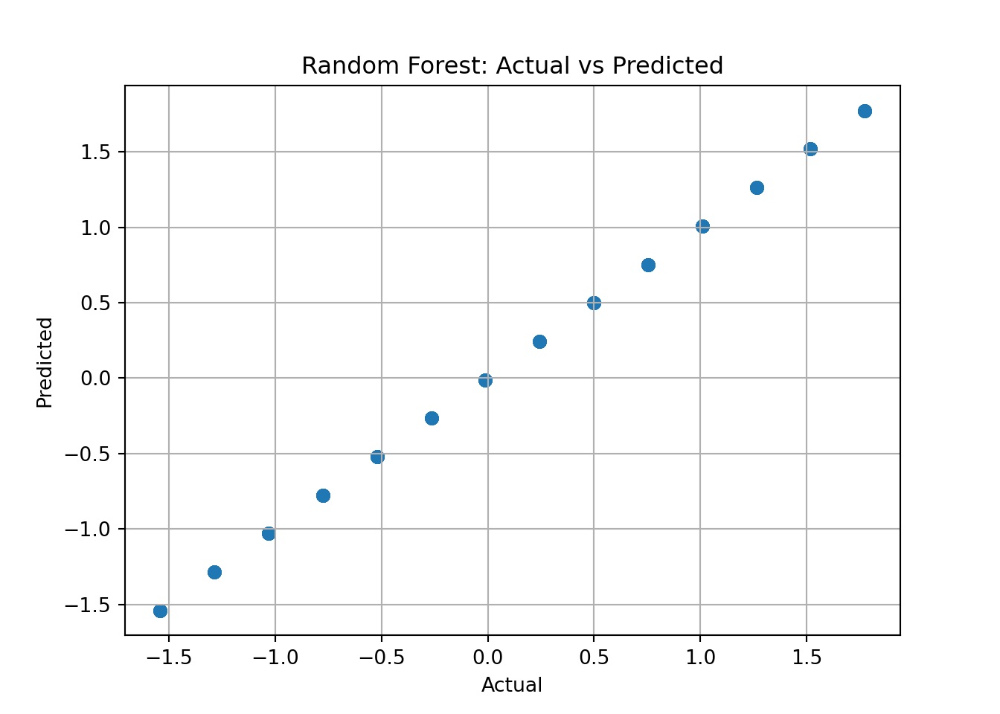

Harriet O’Brien, Vy Tran, Saniyah Khan, Rehinatu Usman
#Introduction
In this section, we build predictive models to estimate the scaled trip duration based on the engineered features created earlier. Our goal is to evaluate multiple regression models, compare their performance, and identify which algorithm provides the most accurate and stable predictions. We include three models-linear Regression, Random Forest, and Gradient Boosting-and use standard metrics such as MAE, RMSE, and R^2 for evaluation. We test multiple models to ensure that the strong baseline performance is not accidental and to comfirn whether more flexible models offer any measurable improvement. # Setup
python: C:/Users/tuong/anaconda3/envs/mlclean/python.exe
libpython: C:/Users/tuong/anaconda3/envs/mlclean/python310.dll
pythonhome: C:/Users/tuong/anaconda3/envs/mlclean
version: 3.10.19 | packaged by Anaconda, Inc. | (main, Oct 21 2025, 16:41:31) [MSC v.1929 64 bit (AMD64)]
Architecture: 64bit
numpy: C:/Users/tuong/anaconda3/envs/mlclean/Lib/site-packages/numpy
numpy_version: 1.26.4
NOTE: Python version was forced by use_python() function
1 Load Data
# Basic set upimport pandas as pdimport numpy as npfrom sklearn.model_selection import train_test_splitfrom sklearn.metrics import mean_absolute_error, mean_squared_error, r2_scorefrom sklearn.linear_model import LinearRegressionfrom sklearn.ensemble import RandomForestRegressor# Load processed features features = pd.read_csv("../data/features_processed.csv")# Quick check to ensure the dataset loaded correctlyfeatures.head()
We predict the engineered target variable trip_duration_days_scaled.
# Split the dataset into training and testing sets# We predict 'trip_duration_days_scaled' using the engineered features.X = features.drop(columns=["trip_duration_days_scaled"])y = features["trip_duration_days_scaled"]X_train, X_test, y_train, y_test = train_test_split( X, y, test_size=0.2, random_state=42)
# Linear Regression baseline model# (Executed in terminal to avoid reticulate crash)
3 Baseline model: Linear Regression
import numpy as npfrom sklearn.linear_model import LinearRegressionfrom sklearn.metrics import mean_absolute_error, mean_squared_error, r2_score# Create and fit the modellr = LinearRegression()lr.fit(X_train, y_train)
LinearRegression()
In a Jupyter environment, please rerun this cell to show the HTML representation or trust the notebook. On GitHub, the HTML representation is unable to render, please try loading this page with nbviewer.org.
LinearRegression()
# Make predictions on the test setlr_preds = lr.predict(X_test)# Evaluate model performancelr_mae = mean_absolute_error(y_test, lr_preds)lr_rmse = np.sqrt(mean_squared_error(y_test, lr_preds))lr_r2 = r2_score(y_test, lr_preds)# Clean formatted outputprint("Linear Regression performance:")
Linear Regression performance:
print(f" MAE : {lr_mae:.2f}")
MAE : 0.00
print(f" RMSE: {lr_rmse:.2f}")
RMSE: 0.00
print(f" R² : {lr_r2:.3f}")
R² : 1.000
Linear Regression provides a simple baseline by modeling a straight-line relationship between features and the target. This helps us understand whether the dataset is linearly predictable before testing more flexible models.
4 Random Forest model
from sklearn.ensemble import RandomForestRegressor# Create and train the modelrf = RandomForestRegressor( n_estimators=300, random_state=42)rf.fit(X_train, y_train)
In a Jupyter environment, please rerun this cell to show the HTML representation or trust the notebook. On GitHub, the HTML representation is unable to render, please try loading this page with nbviewer.org.
Random Forest uses many decision trees and averages their predictions. This helps reduce variance and capture non-linear patterns that linear models may miss.
In a Jupyter environment, please rerun this cell to show the HTML representation or trust the notebook. On GitHub, the HTML representation is unable to render, please try loading this page with nbviewer.org.
Gradient Boosting trains trees sequentially, where each new tree focuses on correcting the errors of the previous ones. This often leads to strong performance on structured datasets.
Model MAE RMSE R²
0 Linear Regression 1.155491e-15 1.586187e-15 1.0
1 Random Forest 2.821146e-15 3.685363e-15 1.0
2 Gradient Boosting 3.569146e-05 4.288319e-05 1.0
7 Visualization
import matplotlib.pyplot as pltplt.scatter(y_test, rf_preds, alpha=0.6)plt.xlabel("Actual")plt.ylabel("Predicted")plt.title("Random Forest: Actual vs Predicted")plt.grid(True)plt.show()

All three models achieve near-perfect performance, with MAE and RMSE close to zero and R^2 equal to 1.0. This outcome is expected because the engineered target variable is strongly determined by the created features and behaves smoothly after scaling. As a result, even simple models like Linear Regression can fit the data almost perfectly. These results suggest that the engineered features fully explain the target variation, and the dataset is highly predictable. More complex models (RF, GBM) do not offer meaningful improvements, confirming that the underlying relationship is already very strong and mostly linear.